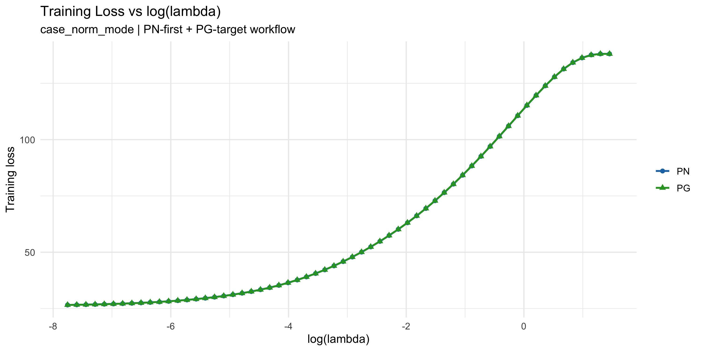
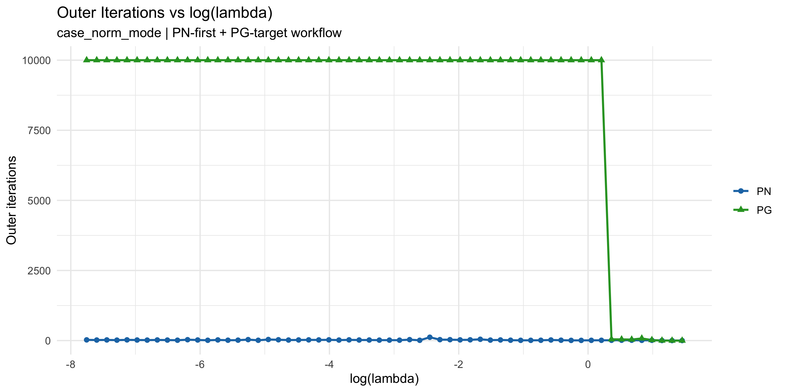
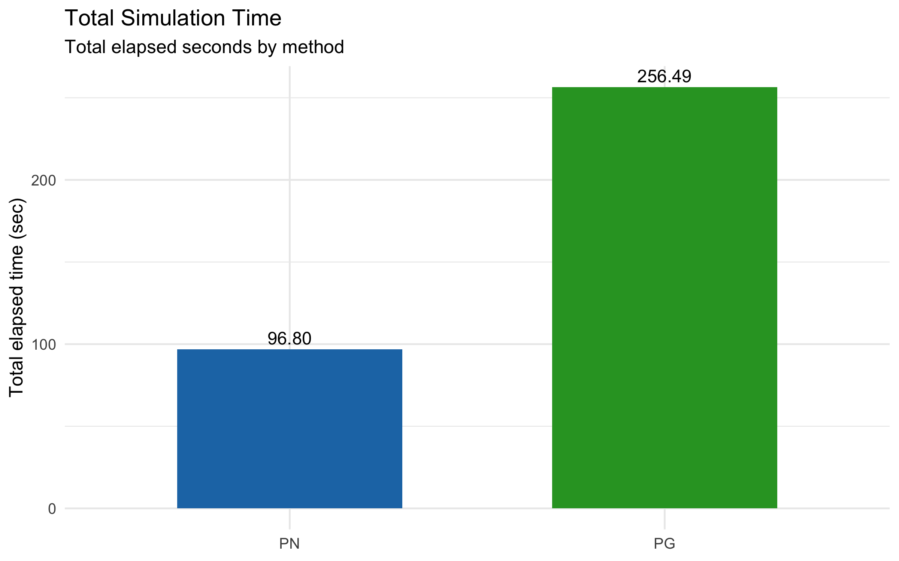

Simulation Comparison Report
Generated at: 2026-03-05 20:44:03 CST
Settings: case_norm_mode, tol_outer=1e-04, tol_inner_base=1e-05, tol_inner_floor=1e-08, max_iter_pg_target=10000
Requested Plots
Training Loss vs log(lambda)

Outer Iterations vs log(lambda)

Total Simulation Time

Total Simulation Time Table
| method | total_elapsed_sec | tol_outer | tol_inner_base | tol_inner_floor | max_iter_pg_target |
|---|
| PN | 96.80065 | 1e-04 | 1e-05 | 1e-08 | 10000 |
| PG | 256.49280 | 1e-04 | 1e-05 | 1e-08 | 10000 |